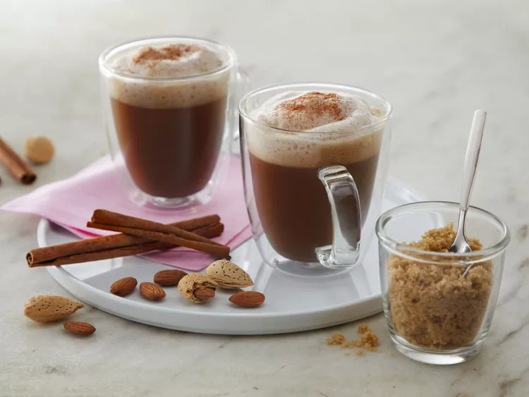

Cinnamon Brown Sugar Latte

Description
Make this quick and delicious Almond Breeze Almondmilk latte to sweeten your morning.
Ingredients
- 1 1/2 cups Almond Breeze Unsweetened Vanilla Almondmilk
- 2 tablespoons brown sugar
- 1/2 teaspoon ground cinnamon
- 1 cup strong brewed coffee or 2 shots espresso
Steps
-
In a small saucepan, add Almond Breeze Unsweetened Vanilla Almondmilk, brown sugar, and cinnamon. Bring just to a boil, then remove from heat. Use a milk frother to froth Almondmilk mixture.
-
Pour coffee or espresso equally into 2 mugs, then top with Almondmilk mixture. Serve.